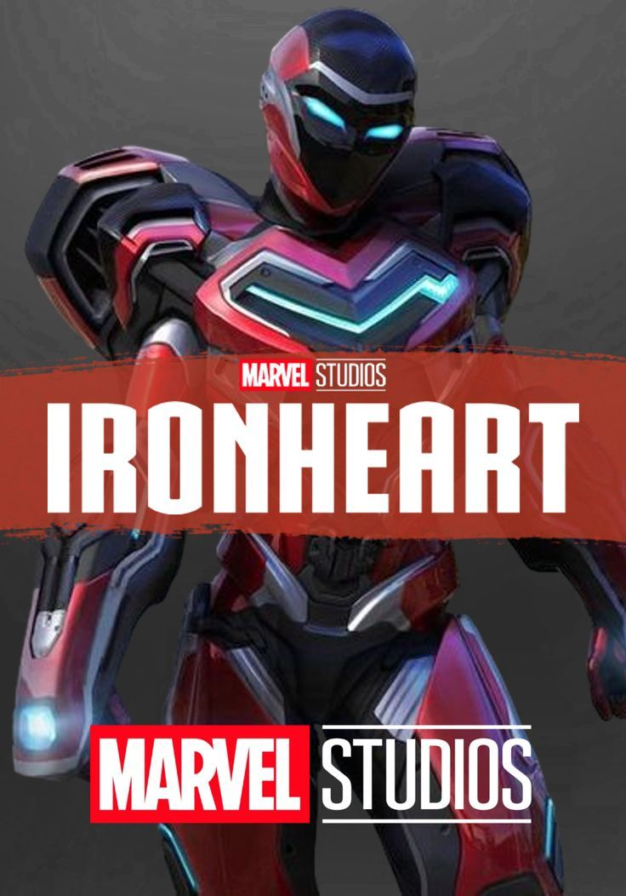

Ironheart is a bold and emotional addition to the Marvel universe, introducing Riri Williams—a brilliant teen who crafts her own Iron Man–style suit. The series delivers strong performances, especially by Dominique Thorne, and explores deeper themes of grief, legacy, and self-discovery. Visually, it’s impressive, mixing sleek tech with mystical elements. However, the pacing is inconsistent, and some storylines feel rushed or underdeveloped. While not without flaws, Ironheart succeeds in offering a fresh, younger perspective, making it a promising and heartfelt origin story for Marvel’s next generation.
Your Opinon?